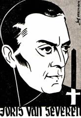
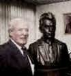

> nieuwsbrief >
2013 - nr 2
Inhoud
Hernieuwen
ledenbijdrage voor 2013
Uw
secretaris is een tevreden man: de hernieuwing van de
bijdragen
verliep uitermate vlot. Ter herinnering: de ledenbijdrage voor 2013
beloopt
voor het in mei te verschijnen nieuwe Jaarboek
Joris van Severen al het 17e in de reeks! - en voor de
driemaandelijkse Nieuwsbrief Joris van
Severen 29 . Vanaf 35 wordt u met dank als steunend lid geboekt.
Gelegenheidslezers
maken we ook graag attent op onze verdere plannen zoals de voor 2014
geplande
prestige-uitgave van de grote fotobiografie over Joris van Severen en
zijn
beweging.
Inhoudsopgave
Jaarboek Joris van Severen 17 (2013)
Ten geleide
Dagboek 1 mei 30 september 1920
Joris van Severen
De eerste grote
synthese - Joris van Severen - 1924
Tussen rood en groen -Joris van Severen,
het Verdinaso en de socialisten
In
de schaduw van Louis Gueuning (1898-1971)
Joseph Peeters in gesprek met
Je spoor 6 haikus,
denkend aan Joris
van Severen
Herwig Verleyen
De voorstelling van deze uitgave zal kaderen binnen een Colloquium Joris van Severen dat in het najaar van 2014 te Wakken zal doorgaan.
In onze Nieuwsbrief zullen we regelmatig op dit grootse project terug-komen, teneinde u tijdig te informeren over de stand van zaken. Deze publicatie buiten reeks, zal tevens als ons jaarboek voor 2014 fungeren.
Aan
de
graftombe van Louis Gueuning op 10 november 2012
Verderop in dit nummer brengen we ook het In Memoriam, op 10 november laatstleden uitgesproken door Jos Peeters aan het graf van Louis Gueuning te Mainvault in Henegouwen. Aan de daar gehouden sobere plechtigheid namen bestuursleden deel van de Stichting Joris van Severen en van ons Studiecentrum Joris van Severen.
We kunnen nu reeds meegeven dat eenzelfde bezinningsmoment aldaar in 2013 zal plaatsvinden op zaterdag 9 november om 11.00 uur.

Een
initiatief van de Stichting
Joris van Severen vzw
Jaarmis
in de kapel van het Slot
van Male
Zaterdag 18 mei 16.00 uur: Plechtige Gregoriaans gezongen H. Mis met homilie, opgedragen door de E.H. Roeland van Steenkiste, in de Abdijkapel van het Grafelijk Slot van Male, Pelderijnstraat 14, 8310 Sint-Kruis Brugge, ter nagedachtenis van Joris van Severen, zijn lotgenoten en al onze overledenen.
17.30 uur: Receptie, aangeboden door de Stichting Joris van Severen vzw, gevolgd door de overhandiging van het 17e Jaarboek Joris van Severen aan de aanwezige leden van het Studiecentrum Joris van Severen.
Groet
aan het graf te Abbeville
Zondag
19 mei: afspraak om 11.30 uur aan de toegang tot
het
kerkhof te Abbeville. Aansluitend gezamenlijk bezoek aan het graf van
Joris van
Severen en
Steun en
info
Voor het bezoek aan het
graf te
Abbeville op zondag 19 mei maken we gebruik van de
samenrijden-formule op
kostendelende basis. Dit initiatief wordt gecoördineerd door
Aan de
graftombe van Louis Gueuning:
het Appel der XVII Provinciën
in
dit uur van uiterst gevaar verzameld op de herdenking van de
Defensor
Civitatis et Ordinis Louis Gueuning
past het op deze 10e november 2012, ons te herbronnen
van Brabant tot Friesland, tot Luxemburg, tot Picardië
(waar onze Pater Patriae der Nederlanden Joris van Severen gevallen is, zoals Karel de Stoute voor Nancy).
Ons herbronnen van Brabant tot het Rijnland en van Brabant tot de Somme, ons herbronnen van Brabant tot Vlaanderen, van Brabant tot Europa,
van Stroom tot Stroom tot aan de Zee en tot de Bergen.
Ons herbronnen op dit Deltagebied der drie grote Europese Stromen en te midden van dit maatschappelijk, staatkundig en politiek (geopolitiek) geheel waarvan de XVII Provinciën der Nederlanden de kern zijn.
*
Ons herbronnen en vooreerst onze oorsprong herinneren: van de Dinaso Militanten Orde (1934) tot de Orde Joris van Severen (1940). Ons het leven en het werk en de Leer van de Stichters en van hun opvolgers in herinnering brengen:
Eén
is het Doel, één is de Weg, één is de
Leider.
Ons vervolgens de grondslagen van onze eeuwenoude Instellingen herinneren:
de
Prins in zijn Raden, het Volk in zijn
Staten
met de Saxen-Coburgers, met de Habsburgers, met de De Croÿs, met de Oranjes, met de Bourgondiërs, met de Karolingers, met de Merovingers
(Gesta Dei per Francos, besloot het eerste deel van de uitzonderlijke biografie van een Luxemburgse historicus over Clovis) en hun voorzaten van de Eburonen en van de Nerviërs.
*
Ons bezinnen tenslotte over het feit dat het Verdinaso (1931-1940) de anti-these was van de oude en nieuwe partijen de politieke partijen deeluit-makend van het partijenregime, stoelend op de links-rechts ideologieën van de Franse Revolutie (1789)1 maar een Verbond met een programma waarvan de laatste zin van de inleiding eindigde met de woorden:
God, bron van alle Recht en van alle Orde.
Een Verbond (ook geen communistische, geen fascistische, geen liberale en/of modernistische organisatie) dat de maatschappelijke, staatkundige, politieke structuren in overeenstemming wilde brengen met de roeping van de menselijke persoon.
*
Wat waar is voor de Persoon, telt ook voor de Gemeenschappen, in het bijzonder voor het Volk der Nederlanden en zijn eeuwenoude verankering in het hart van Europa en de Westerse beschaving.
Dat drukt zich ook uit in de Leo Belgicus (XVIe eeuw) met 17 pijlen, in de spreuk van de Orde Joris van Severen: Gloriosior Exsurgo, in het schild met de vier hoofddeugden: Voorzichtigheid, Rechtvaardigheid, Sterkte, Matigheid in het devies van Erasmus dat Louis Gueuning heeft overgenomen: Ik handhaaf alles = Nulli concendo,
in zijn monogram 3
*
Gloriosior
Exsurgo!
Wanneer de tijden rijp zijn, zult U nog glorierijker herrijzen tot verheerlijking van de XVII Provinciën, van Europa en van het Westen.
Joseph-E. Peeters, Permanent secretarisvan de Stichting Louis Gueuning.
Noten
1 François Furet, Penser
François
Furet was, zoals hij zelf schrijft in Le passé dune
illusion, communist (1949-1956), p. 15. Hij was een
historicus met internationale faam, voorzitter van de Ecole des hautes
études
et sciences-sociales, universiteitsprofessor te Chicago, voorzitter van
de
Fondation Saint-Simon. Zijn hoofdwerk verscheen in het
Nederlands onder
de titel
2
Louis
Gueuning,
3
Een leven geleid door een sterk Godsbesef
Dat was typisch Joris
van
Severen in wie, naast andere uitzonderlijke gaven, eveneens een diepe
godsdienstzin en een bijna pijnlijke hunker naar een innerlijk
soldatesk beleefd
Christendom leefde en roerde.
Uit diezelfde periode dateert een brief van Joris van Severen waarin hij, die nog denkt zijn leven totaal aan de kunst te zullen wijden, een belijdenis aflegt die de drang in hem naar het Eeuwige openbaart, die ook zijn politieke strijd zal beheersen en zeker de diepere drijfveer voor zijn rusteloos zoeken aanwijst: Mijn kunst, en ik geloof dat zij de voornaamste en enige opdracht van mijn leven is, zal een werk ter verheerlijking van deze Christus zijn. Was het rusteloos zoeken en het onverpoosd verder bouwen, ontdaan van de vreugde van één dag, bij deze mens iets anders dan de betrachting van het onvolmaakte schepsel naar zijn schepper, God, bron van alle Orde en Rechtvaardigheid? Zoals de schoonheidsbetrachting van de kunstenaar die in wezen niets anders is dan een schreeuw van heimwee naar de Eeuwige Schoonheid.
_______________
Bron: Jong-Nederland
tijdschrift voor Nederlands nationale strijd (van het
Blauwvoetjeugdverbond), 1e jg., nr. 3, mei 1960.
Jef Persyn bij de onthulling van
het borstbeeld van zn vader Jules
Persyn
Op
29
Hilde de
Laet (Borgerhout
16 juli 1930 Brasschaat 28
Ontmoeting
met Henk van der Heyden1
Midden juni 2011 bracht
ik een
bezoek aan Henk van der Heijden in Steensel, gelegen in de Acht
Zaligheden, net
onder Eindhoven in de Kempen.